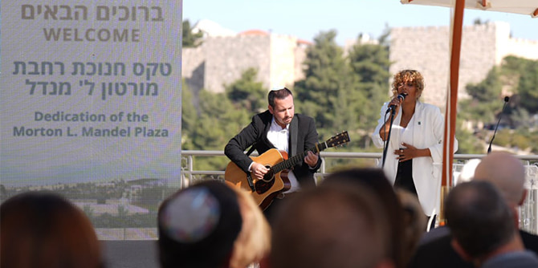

רחבת מורטון ל' מנדל החדשה (צילום: סימנים)
רחבת מורטון ל' מנדל החדשה (צילום: סימנים)
ב-18 בנובמבר חנכו העיר ירושלים והקרן לירושלים את רחבת מורטון ל' מנדל החדשה. הרחבה, הנמצאת במיקום מרכזי, ליד טחנת הרוח ההיסטורית של מונטיפיורי, שופצה על-ידי העירייה ונוספו בה ספסלי אבן חדשים ופינות ישיבה המשקיפות על העיר העתיקה. עיריית ירושלים החליטה לקרוא לרחבה על שם מורטון ל' מנדל, שזכה עוד בימי חייו בתואר "בונה ירושלים", וזאת בהוקרה על מעורבותו הפעילה בישראל ועל תמיכתה הנרחבת של קרן מנדל במוסדות וביוזמות ברחבי ירושלים.
באירוע השתתפו ראש עיריית ירושלים
משה ליאון, שר התפוצות
נחמן שי, מנכ"ל עיריית ירושלים
איציק לארי, נשיא הקרן לירושלים
שי דורון, נשיא קרן מנדל
פרופסור יהודה ריינהרץ, יו"ר הקרן
סטיב הופמן, מנכ"ל קרן מנדל-ישראל משה ויגדור, הוועדים המנהלים של קרן מנדל ושל תאגיד פארקווד, וכן חברי ההנהלה, הסגל וצוות העובדים של קרן מנדל-ישראל.
 טקס חנוכת הרחבה (צילום: סימנים)
טקס חנוכת הרחבה (צילום: סימנים)
ראש העיר משה ליאון הסיר את הלוט מעל השלט החדש ברחבה, שעליו נכתב בעברית, בערבית ובאנגלית:
רחבת מורטון ל' מנדל
מורטון ל' מנדל
1921-2019
"בונה ירושלים"
מבכירי הפילנתרופים והמנהיגים החברתיים בארה"ב,
יזם עסקי מוביל ותורם מרכזי למדינת ישראל.
היו"ר המייסד של קרן ג'ק, ג'וזף ומורטון מנדל
ייעודה של הקרן לתרום לחיזוקן של חברות צודקות, סובלניות, מיטיבות ודמוקרטיות בארצות הברית ובישראל,
ולשפר את איכות חייהם של כל האזרחים בשתי המדינות.
 ראש העיר משה ליאון (צילום: סימנים)
ראש העיר משה ליאון (צילום: סימנים)
ראש העיר משה ליאון סיפר על מחויבותה של קרן מנדל לרווחת העיר ירושלים, המתבטאת גם בתמיכה שהעניקה לשם הקמתו של מרכז הספורט הקהילתי על שם ג'ק, ג'וזף ומורטון מנדל – מרכז הספורט הקהילתי הראשון במזרח ירושלים הנבנה בימים אלו בבית חנינא. ליאון הזכיר את החלום שהוא ומורט חלקו למען העיר ירושלים: חזון של שלום. שי דורון, נשיא הקרן לירושלים, הודה לקרן מנדל על תמיכתה ב"סדרתרבות" – סדרת אירועי תרבות המתקיימים ברחבי העיר חינם בימי הקיץ ומנגישים תרבות לכל מגזרי החברה הישראלית.
פרופסור יהודה ריינהרץ ציין בנאומו את קווי הדמיון בין מורטון מנדל למשה מונטיפיורי. מונטיפיורי רכש את אדמות שכונת משכנות שאננים באמצע המאה ה-19, הקים עליהן בתים וטחנת רוח, ובכך ייסד את השכונה היהודית הראשונה מחוץ לעיר העתיקה. שני הגברים היו אנשי עסקים שבנו את עצמם במו ידיהם, חיו מחוץ לישראל, היו מסורים לעיר ירושלים והיו עדים בחייהם להתפתחויות רבות בעיר. "מורט מנדל העריך את היופי וההיסטוריה של העיר ועיטר את נופיה במבנים שאינם רק נהדרים, אלא גם תואמים את אופיה", אמר פרופסור ריינהרץ והוסיף כי קרן מנדל מכשירה את מנהיגיה של ירושלים ותורמת לשיפור חיי התרבות ולמוסדותיה האקדמיים של העיר, וכך למעשה ממשיכה את המלאכה שהחל משה מונטיפיורי לפני יותר מ-150 שנה. "אנחנו מודים לעיר ירושלים ולקרן לירושלים על שהם מאפשרות למורשתו של מורט להימשך במקום היפה הזה", אמר בסיום דבריו.
אתנחתא מוזיקלית: "ירושלים של זהב" (צילום: סימנים)
{kind=link}